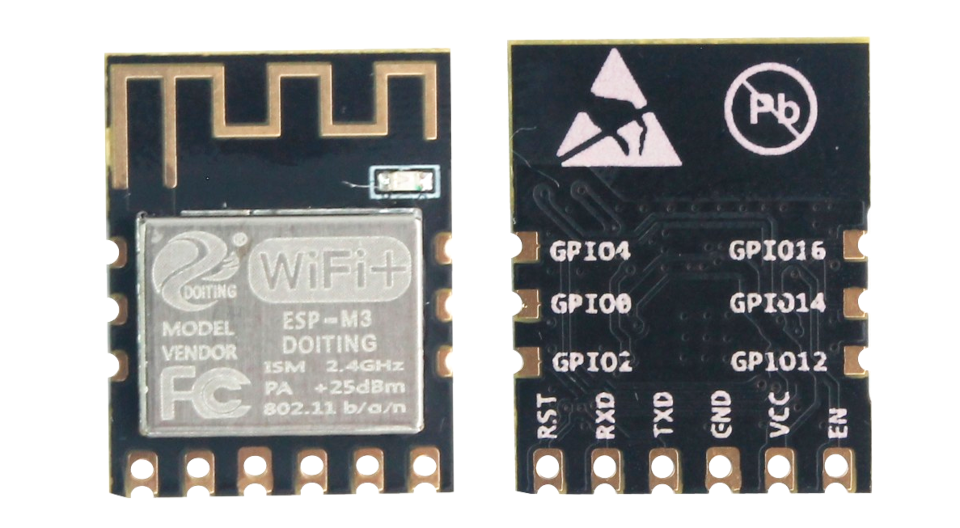
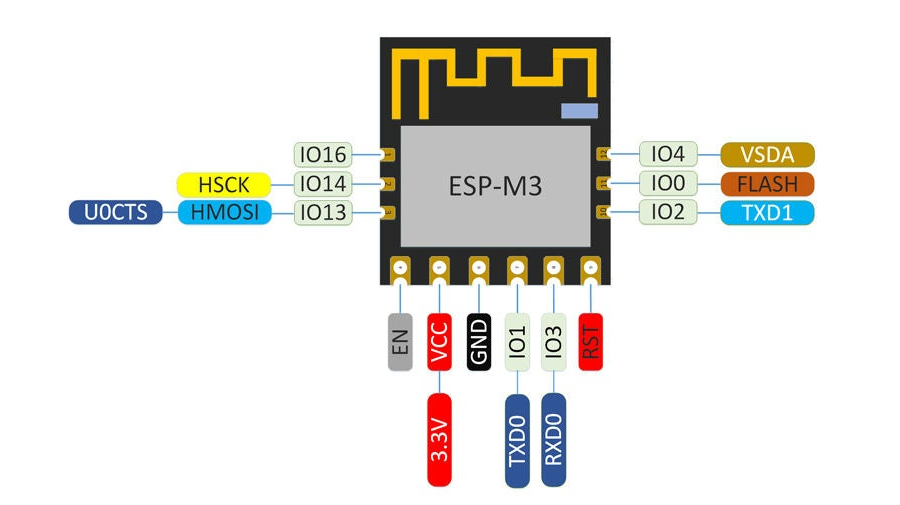
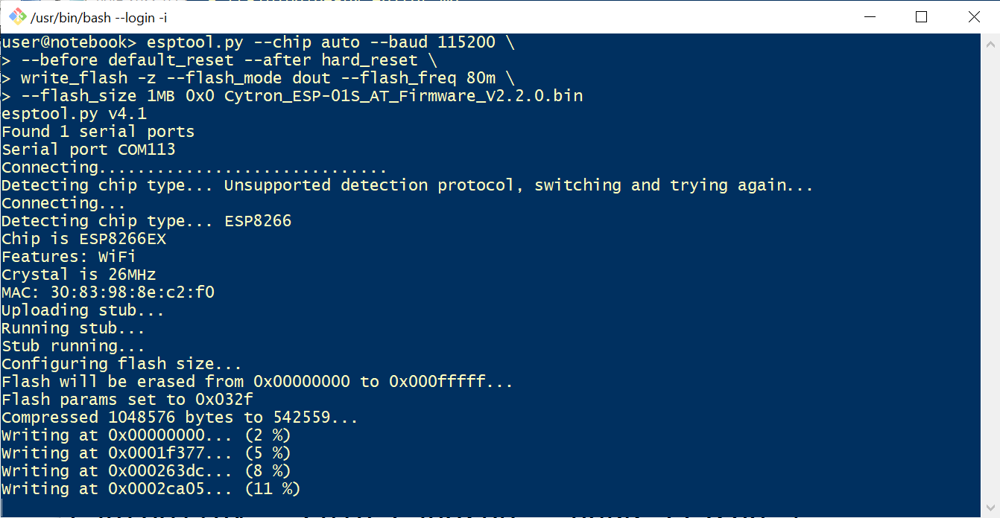

การติดตั้งเฟิร์มแวร์ Espressif ESP-AT สำหรับโมดูล Wi-Fi Serial#
▷ โมดูล Espressif WiFi Serial#
บทความนี้กล่าวถึง การใช้งานโมดูล Wi-Fi Serial ที่ใช้ชิป Espressif ESP8266EX, ESP8285 หรือ ESP32C3 ซึ่งทำหน้าที่เป็นอุปกรณ์ที่ช่วยให้ระบบอิเล็กทรอนิกส์อื่น เช่น บอร์ดไมโครคอนโทรลเลอร์ สามารถเชื่อมต่อเข้าสู่ระบบเครือข่ายไร้สาย WiFi (2.4 GHz) และอินเทอร์เน็ตได้
อุปกรณ์ประเภทนี้ใช้วิธีการเชื่อมต่อระหว่างอุปกรณ์ด้วย UART / Serial (Logic Level, 3.3V) ใช้สายสัญญาณ TXD / RXD และบริษัท Espressif ได้พัฒนาเฟิร์มแวร์ และชุดคำสั่งที่เรียกว่า ESP AT Command Set เพื่อส่งข้อความที่เป็นคำสั่งไปยังโมดูลดังกล่าว และคอยรับข้อความตอบกลับ
โมดูลที่ใช้ชิปของบริษัท Espressif แบ่งได้เป็น 2 กลุ่ม คือ ESP8266 / ESP8285 (เป็นรุ่นเก่า)
และ ESP32 / ESP32-S2 / ESP32-C2 / ESP32-C3 (เป็นรุ่นใหม่ และมีประสิทธิภาพดีกว่า)
รูป: โมดูล Wi-Fi to Serial ที่ใช้ชิปของบริษัท Espressif
▷ โมดูล ESP8266 / ESP8285#
ข้อมูลเกี่ยวกับโมดูล ESP01 / ESP01S (ESP8266EX-based)
- มีชิป ESP8266EX (Tensilica L106: 32-bit RISC CPU, 160MHz) เป็นตัวประมวลผลหลัก
- มีไอซีประเภทหน่วยความจำแฟลช SPI Flash ขนาด 1MB
- มีตัวสร้างความถี่ 26MHz Cytstal
- มีสายอากาศแบบ PCB Antenna
- ทำงานด้วยแรงดันไฟเลี้ยง VCC = +3.3V
- โมดูล ESP01 มี Power-On LED (red) และ Blue Status LED (GPIO1 / TXD, active-low)
- โมดูล ESP01S มีแค่ Blue LED (GPIO2, active-low)
รูป: โมดูล ESP01 / ESP01S ที่มีชิปหน่วยความจำแฟลซ (Flash) ขนาด 1MB (PCB เป็นสีดำ)
รูป: ผังแสดงตำแหน่งขาของโมดูล ESP01 / ESP01S
โมดูลมีขาแบบ 2x4 Male Pin Headers ระยะห่างระหว่างขา 2.54 มม.
| Pin | Name |
|---|---|
| 1 | GND |
| 2 | GPIO1 / U0TXD |
| 3 | GOIO2 |
| 4 | CH_PD / EN |
| 5 | GPIO0 |
| 6 | RESET |
| 7 | GPIO3 |
| 8 | VCC (+3.3V) |
รูป: โมดูล ESP8285 ESP-1 (มุมมองด้านหน้าและด้านหลัง)
ข้อสังเกต:
- ขา CH_PD / EN จะต้องต่อกับ +3.3V ผ่านตัวต้านทาน Pullup เพื่อให้ชิปทำงานปรกติ
- ขา GPIO0 ใช้สำหรับเลือกโหมดการทำงาน ถ้าเป็นลอจิก LOW จะเข้าสู่โหมด UART Boot (ใช้สำหรับ Firmware Upload) แต่ถ้าเป็นลอจิก HIGH จะเข้าสู่โหมด SPI Flash Boot เพื่อทำงานตามปรกติ และโมดูล ESP-01 มีตัวต้านทาน 12kΩ แบบ Pullup ต่อกับขานี้ไปยัง +3.3V ไว้ให้แล้ว
- ขา RESET ทำงานแบบ Active-Low และโมดูล ESP-01 มีตัวต้านทาน 12kΩ แบบ Pullup ต่อกับขานี้ไปยัง +3.3V ไว้ให้แล้ว
- การอัปโหลดเฟิร์มแวร์ผ่านอุปกรณ์ USB-to-Serial จะต้องทำให้ ESP8266EX เข้าสู่ Bootloader / UART Boot Mode โดยการทำให้ขา GPIO0 เป็น LOW แล้วทำให้ขา RESET เป็น LOW เพื่อรีเซต แล้วเปลี่ยนเป็น HIGH เพื่อเริ่มต้นทำงานใหม่อีกครั้ง ดังนั้นแนะนำให้ต่อปุ่มกดเพิ่ม 2 ปุ่ม ที่ทำงานแบบ Active-Low ที่ขา GPIO0 และ RESET ตามลำดับ
- ชิป ESP8285 ได้รวม ESP8266EX กับ 1MB Flash ไว้ในชิปเดียวกัน และทำงานได้ในช่วงอุณหภูมิเพิ่มขึ้น (จากเดิม 85℃ เป็น 125℃)
- นอกจากโมดูล ESP8285 ESP-1 แล้วก็อาจจะเลือกใช้โมดูล ESP8285 ESP-M3 แทนได้ แต่ตำแหน่งขาของโมดูลจะไม่เหมือนกัน
- เนื่องจากโมดูลมีขาเป็นแบบสองแถว 2x4 ขา ดังนั้นถ้าจะนำไปใช้ในการต่อวงจรบนเบรดบอร์ด ก็จะใช้ร่วมกับโมดูล ESP-01 Adapter
รูป: ตัวอย่างการต่อวงจรเพื่อใช้ในการอัปโหลดไฟล์เฟิร์มแวร์ด้วยอุปกรณ์ USB-to-Serial
ข้อสังเกต:
- โมดูล USB-to-Serial ที่มีชิปอย่างเช่น CP2104 หรือ CH340 แม้ว่าจะมีขา +3.3V ที่นำไปใช้เพื่อจ่ายกระแสภายนอกได้ แต่มีข้อจำกัดในปริมาณของกระแส ดังนั้น แนะนำให้ใช้ขา +5V ไปต่อกับโมดูล Linear Voltage Regulator เช่น AMS1117-3.3 เพื่อแปลงให้เป็น +3.3V แล้วนำไปใช้เป็นแรงดันไฟเลี้ยงป้อนให้โมดูล ESP WiFi Serial
▷ โมดูล ESP-M3#
โมดูล ESP-M3 มีชิป Espressif ESP8285H16 อยู่ภายใน ชิปรุ่นนี้ได้รวมหน่วยความแฟลช ขนาด 2MB ไว้ภายใน ทำงานในช่วงอุณหภูมิได้ -40 ℃ .. +125℃ แต่มีขา GPIO ค่อนข้างน้อย ดังนั้นจึงเหมาะสำหรับนำมาใช้เป็นอุปกรณ์ WiFi-to-Serial เช่นเดียวกับ ESP01/ESP01-S แต่มีตำแหน่งและการจัดวางขาแตกต่างจากเดิม

รูป: โมดูล ESP-M3 (ESP8285)

รูป: ผังแสดงตำแหน่งขาของโมดูล ESP-M3
ถ้าลองส่งคำสั่ง AT+GMR ผ่าน Serial ไปยังโมดูลดังกล่าว
จะได้ข้อความที่แสดงให้เห็นเวอร์ชันของเฟิร์มแวร์ ดังนี้
AT+GMR
AT version:1.1.0.0(May 11 2016 18:09:56)
SDK version:1.5.4(baaeaebb)
compile time:May 20 2016 15:08:19
▷ โมดูล LILYGO T-01C3#
ตัวอย่างของโมดูลที่มีลักษณะเหมือน ESP01 / ESP01S ซึ่งมีตำแหน่งขาและฟังก์ชันเหมือนกัน แต่ใช้ชิป ESP32-C3 (QFN32 package) (มีทั้ง WiFi และ BLE 5.0) และมีหน่วยความจำแฟลชภายนอก 4MB W25Q32FVSS ได้แก่ โมดูล LILYGO T-01C3 (Schematic) สามารถเลือกใช้สายอากาศสองแบบ คือ PCB Antenna (default) และ External Antenna โดยต่อกับ IPEX connector (ผู้ใช้จะต้องแก้ไขด้วยการบัดกรีตัวต้านทาน 0R แบบ SMD เพื่อเปลี่ยนเส้นทางสัญญาณไปยังสายอากาศ) โมดูลนี้ยังมี Green LED (Active-High) ต่อกับขา GPIO3 โมดูลนี้ใช้ขา U0TXD=GPIO21 / U0RXD=GPIO20 ในการเชื่อมต่อผ่าน UART
รูป: โมดูล LILYGO T-01C3
โมดูล LILYGO T-01C3 มีขาแบบ 2x4 Male Pin Headers ระยะห่างของขาเท่ากับ 2.54 มม.
| Pin | Name |
|---|---|
| 1 | GND |
| 2 | U0TXD / GPIO21 |
| 3 | GPIO2 |
| 4 | GPIO8 |
| 5 | GPIO9 |
| 6 | CHIP_EN / RESET |
| 7 | U0RXD / GPIO20 |
| 8 | VCC (+3.3V) |
ขา GPIO2, GPIO8 และ GPIO9 ของ ESP32-C3 จะใช้สำหรับการเลือกโหมด สำหรับการบูท (Booting Mode) และเริ่มต้นการทำงานของชิปเมื่อมีการรีเซต
- GPIO9=0, GPIO2=1, GPIO8=1: จะเข้าสู่ Download Mode (เมื่อต้องการอัปโหลดเฟิร์มแวร์ผ่าน TXD / RXD)
- GPIO9=1, GPIO2=1, GPIO8=Don't Care: จะเข้าสู่ SPI Mode เพื่อเริ่มทำงานจากโปรแกรมใน SPI Flash ตามปรกติ
▷ ESP-AT Firmware#
ในขณะที่เขียนบทความนี้ เวอร์ชันล่าสุดของ ESP-AT Firmware คือ v2.4.0.0 (Release Date: May 20, 2022) เป็น Open Source และสามารถดาวน์โหลดได้จาก Github (https://github.com/espressif/esp-at/)
ข้อสังเกต:
- การพัฒนาเวอร์ชันใหม่ ๆ ของ ESP-AT จะใช้สำหรับโมดูล ESP32 เป็นหลัก แต่สำหรับ ESP8266 / ESP8285 เวอร์ชันล่าสุดคือ v2.2.1.0 (Release Date: August 6, 2021)
ถ้าต้องการเขียนโปรแกรมไมโครคอนโทรลเลอร์ด้วย Arduino IDE เพื่อเชื่อมต่อกับโมดูลดังกล่าว ก็มีไลบรารี เช่น WiFiEspAT (https://github.com/jandrassy/WiFiEspAT) ให้เลือกใช้งาน และใช้สำหรับเฟิร์มแวร์ของ ESP-AT จำแนกเป็นสองตัวเลือก คือ AT v1.7.x และ AT v2.x
- AT v1.7.0+ (NonOS SDK-based): เหมาะสำหรับ ESP8266 / ESP8285 และแนะนำให้ใช้ AT v1.7.5 สำหรับโมดูลที่มีหน่วยความจำแฟลช 1 MB
- AT v2.1.0+ (RTOS SDK-based): เหมาะสำหรับ ESP32 มากกว่า
▷ การติดตั้ง ESP-AT Firmware#
สำหรับโมดูล ESP01 / ESP01S / ESP8285 แนะนำให้ติดตั้ง ESP-AT Firmware เวอร์ชัน ESP-AT v1.7.5 ซึ่งเป็นส่วนหนึ่งของ ESP8266 NonOS SDK v3.0.5
เริ่มต้นด้วยการดาวน์โหลดไฟล์ ESP8266_NONOS_SDK-3.0.5.zip
(Release Date: October 18, 2021) มาลองใช้งาน
เมื่อได้ดาวน์โหลดไฟล์มาแล้ว ให้ทำคำสั่งแตกไฟล์ (เช่น ดูตัวอย่างการทำคำสั่งใน Bash Shell)
จะได้ไดเรกทอรีใหม่ ESP8266_NONOS_SDK-3.0.5
ภายในมีไดเรกทอรีย่อยชื่อ bin และไฟล์เฟิร์มแวร์สำหรับ ESP-AT แบ่งเป็นหลายไฟล์ (.bin)
$ unzip ESP8266_NONOS_SDK-3.0.5.zip -d ./
$ cd ESP8266_NONOS_SDK-3.0.5/bin/
ในการเขียนไฟล์เฟิร์มแวร์ไปยังหน่วยความจำแฟลชของโมดูล เราจะใช้คำสั่ง esptool.py
ซึ่งต้องใช้ร่วมกับ Python 3
# install esptool.py using PIP for Python 3
$ pip3 install -U esptool.py
# show the version of the installed 'esptool.py' program
$ esptool.py version
ตัวอย่างการคำสั่งใน Bash Shell สำหรับเขียนไฟล์เฟิร์มแวร์ไปยังโมดูล ESP01 / ESP01S (1MB Flash) ดัวยคำสั่ง esptool.py มีดังนี้
# erase the entire Flash chip
$ esptool.py erase_flash
# write the ESP-AT firmware to the Flash chip
$ esptool.py write_flash --flash_size 1MB --flash_mode dio \
0x00000 boot_v1.7.bin \
0x01000 at/512+512/user1.1024.new.2.bin \
0xFB000 blank.bin \
0xFC000 esp_init_data_default_v08.bin \
0xFE000 blank.bin \
0x7E000 blank.bin
แต่ถ้าเป็นชิป ESP8285 ให้เปลี่ยนจาก DIO เป็น DOUT สำหรับ Flash Mode
$ esptool.py write_flash --flash_size 1MB --flash_mode dout \
0x00000 boot_v1.7.bin \
0x01000 at/512+512/user1.1024.new.2.bin \
0xFB000 blank.bin \
0xFC000 esp_init_data_default_v08.bin \
0xFE000 blank.bin \
0x7E000 blank.bin
**ข้อสังเกต: **
- ถ้าใช้ Windows PowerShell ในการคำสั่ง
ก็ให้เปลี่ยนจากสัญลักษณ์
\เป็น^ที่อยู่ท้ายสุดของแต่ละบรรทัด (ยกเว้นบรรทัดสุดท้ายที่ไม่มี) สัญลักษณ์นี้ใช้ปิดท้ายบรรทัด เป็นตัวระบุว่า บรรทัดที่ตามมา เป็นส่วนหนึ่งของคำสั่งเดียวกัน
รูป: ตัวอย่างการทำคำสั่งใน Windows Shell สำหรับ Firmware Flashing
รูป: เมื่อทำคำสั่ง esptool.py ได้สำเร็จแล้ว
จากนั้นให้ลองเชื่อมต่อกับโมดูล ESP01 / ESP01S โดยใช้ซอฟต์แวร์ เช่น Arduino IDE
เพื่อสื่อสารข้อมูลผ่านทางพอร์ตอนุกรม ตั้งค่า Baud เท่ากับ 115200 แล้วลองส่งคำสั่ง เช่น
AT ออกไป (เป็นข้อความแบบ ASCII และมี \r\n หรือ NL & CR ต่อท้าย) เมื่อโมดูลได้รับคำสั่งดังกล่าว จะตอบกลับมาเป็นข้อความ AT แล้วตามด้วย OK
หากต้องการทราบเวอร์ชันหรือข้อมูลเกี่ยวกับเฟิร์มแวร์ของโมดูล ให้ลองส่งคำสั่ง AT+GMR ไปยังโมดูล
แล้วจะข้อความตอบกลับ ตามรูปต่อไปนี้
รูป: ตัวอย่างการส่งคำสั่ง AT+GMR ไปยังโมดูล ESP01 / ESP01S
ผ่านทาง Arduino Serial Monitor โดยตั้งค่า Baudrate 115200
ถ้าหากต้องการใช้ ESP-AT Firmware เวอร์ชัน v2.2.0 กับโมดูล ESP01S
แนะนำให้ดาวน์โหลดไฟล์ Cytron_ESP-01S_AT_Firmware_V2.2.0.bin
ซึ่งเป็นไฟล์ Custom Compiled ESP01-AT Firmware Binary ที่เผยแพร่โดยบริษัท Cytron
$ esptool.py --chip auto --baud 115200 \
--before default_reset --after hard_reset \
write_flash -z --flash_mode dout --flash_freq 80m \
--flash_size 1MB 0x0 Cytron_ESP-01S_AT_Firmware_V2.2.0.bin

รูป: การทำคำสั่ง esptool.py เพื่อติดตั้งเฟิร์มแวร์ไปยังโมดูล ESP01S
ข้อสังเกต: ไฟล์เฟิร์มแวร์นี้ สามารถนำไปใช้กับโมดูล ESP-M3 (ESP8285, 2MB Flash) ได้เช่นกัน
ตัวอย่างข้อความเอาต์พุต เมื่อส่งคำสั่ง AT+GMR ไปยังโมดูล ESP01S ที่ได้ติดตั้งเฟิร์มแวร์
ESP-AT V2.2.0 ได้สำเร็จแล้ว
AT+GMR
AT version:2.2.0.0(b097cdf - ESP8266 - Jun 17 2021 12:57:45)
SDK version:v3.4-22-g967752e2
compile time(6800286):Aug 4 2021 17:20:05
Bin version:2.2.0(Cytron_ESP-01S)
OK
ไฟล์เฟิร์มแวร์อีกตัวเลือกหนึ่งเป็นไฟล์ ESP8266-1MB-tx1rx3-AT_V2.2.zip ที่แชร์โดย J. Andrássy ซึ่งจะใช้ได้กับโมดูล ESP8266 (1MB Flash) ที่ใช้ขา GPIO1 / GPIO3 สำหรับ ** TX / RX** ตามลำดับ
ตัวอย่างการทำคำสั่งมีดังนี้
$ unzip ESP8266-1MB-tx1rx3-AT_V2.2.zip
$ cd ESP8266-1MB-tx1rx3-AT_V2.2/
$ esptool.py --chip esp8266 --baud 460800 \
--before default_reset --after hard_reset \
write_flash -z --flash_mode dout --flash_freq 80m \
--flash_size 1MB \
0x8000 partition_table/partition-table.bin \
0x9000 ota_data_initial.bin \
0x0 bootloader/bootloader.bin \
0x20000 esp-at.bin \
0x18000 at_customize.bin \
0x1A000 customized_partitions/client_cert.bin \
0x1B000 customized_partitions/client_key.bin \
0x1C000 customized_partitions/client_ca.bin \
0x1D000 customized_partitions/mqtt_cert.bin \
0x1E000 customized_partitions/mqtt_key.bin \
0x1F000 customized_partitions/mqtt_ca.bin \
0x19000 customized_partitions/factory_param.bin
ตัวอย่างข้อความเอาต์พุต เมื่อส่งคำสั่ง AT+GMR หลังจากที่ได้ติดตั้งเฟิร์มแวร์แล้ว
AT+GMR
AT version:2.2.0.0(s-b097cdf - ESP8266 - Jun 17 2021 12:58:29)
SDK version:v3.4-22-g967752e2
compile time(6800286):Jul 11 2021 11:09:32
Bin version:2.2.0(ESP8266_1MB)
OK
ในกรณีที่ใช้โมดูล LILYGO T-01C3 (4MB Flash) ไฟล์ ESP-AT Firmware สามารถดาวน์โหลดได้จากเว็บไซต์ของ WaveShare Wiki - ESP-C3-32S-Kit: (local copy)
$ esptool.py erase_flash
$ esptool.py -c esp32c3 -b 460800 \
--after hard_reset write_flash \
--flash_mode dio --flash_freq keep --flash_size detect \
0x0 factory_MINI-2M-v2.3.0.bin
เมื่อได้ติดตั้งเฟิร์มแวร์แล้ว ลองส่งคำสั่ง AT+GMR ไปยังโมดูล จะได้ข้อความเอาต์พุตในลักษณะต่อไปนี้
AT+GMR
AT version:2.3.0.0(s-e98993f - ESP32C3 - Dec 23 2021 09:03:59)
SDK version:v4.3.1-354-g98d34e5f6d
compile time(f468678):Jan 18 2022 16:58:32
Bin version:2.3.0(MINI-1)
OK
ข้อสังเกต: เฟิร์มแวร์ ESP32-C3-MINI-1 ของ Espressif ใช้ขา TX=GPIO7, RX=GPIO6, CTS=GPIO5, RTS=GPIO4 สำหรับการเชื่อมต่อกับไมโครคอนโทรลเลอร์ด้วย UART และใช้ขาต่อไปนี้สำหรับ Output Log: TX=GPIO1, RX=GPIO3 แต่จะนำมาใช้กับโมดูล LILYGO T-01C3 ไม่ได้ เนื่องจากการเลือกใช้ขาสำหรับ UART ไม่เหมือนกัน
▷ การใช้โมดูล FT232RL Breakout#
FTDI FT232RL เป็นชิปในประเภท USB-to-Serial Bridge และมีขาสัญญาณ เช่น DTR และ RTS นอกเหนือจากสัญญาณข้อมูล TXD และ RXD สำหรับการสื่อสารแบบอนุกรม (Serial/UART)
เนื่องจากโมดูลนี้ มีขาสัญญาณ DTR และ RTS ที่ทำงานแบบ Active-Low ดังนั้นจึงสามารถนำมาใช้ต่อกับโมดูล ESP01 / ESP01S เพื่อต่อกับขา RESET และ GPIO0 ตามลำดับ และทำหน้าที่เป็นวงจรสำหรับรีเซตและอัปโหลดเฟิร์มแวร์ได้โดยอัตโนมัติ ผู้ไม่จำเป็นต้องกดปุ่มเพื่อเข้าสู่โหมด Bootloader
รูป: โมดูล Sparkfun FT232RL Breakout
รูป: ผังวงจรของโมดูล Sparkfun FT232RL Breakout
รูป: การใช้อุปกรณ์ FT232RL Breakout เพื่ออัปโหลดเฟิร์มแวร์ไปยังโมดูล ESP01
ตัวอย่างการใช้คำสั่ง esptool.py สำหรับโมดูล FT232RL Breakout มีดังนี้
# erase the entire Flash memory (ESP8285)
$ esptool.py --baud 115200 --before usb_reset erase_flash
# flash the firwmare
$ esptool.py --baud 115200 --before usb_reset \
--after soft_reset write_flash \
--flash_size 1MB --flash_mode dout \
0x00000 boot_v1.7.bin \
0x01000 at/512+512/user1.1024.new.2.bin \
0xFB000 blank.bin \
0xFC000 esp_init_data_default_v08.bin \
0xFE000 blank.bin \
0x7E000 blank.bin
▷ การใช้โมดูล Sipeed Dual Serial to USB#
บริษัท Sipeed (ประเทศจีน) ได้พัฒนาโมดูล Dual Serial to USB ซึ่งมี UART จำนวน 2 ชุด และสามารถนำมาใช้ในการโปรแกรมชิป ESP8266 / ESP8285 ได้
คุณสมบัติของโมดูลมีดังนี้
- ใช้ชิปไมโครคอนโทรลเลอร์ GigaDevice GD32F150G8 (32-bit Cortex-M3, 64KB Flash, 8KB SRAM, 72MHz) ทำหน้าที่เป็น USB-to-Serial Bridge
- มีวงจรแปลงแรงดันไฟฟ้า DC-DC Buck converter: 5V to 3.3V
- มีคอนเนกเตอร์แบบ USB Type-A
- มีขา TX, RX, DTR, RTS ** จำนวน 2 ชุด (สำหรับช่อง UART0 และ UART1**)
- มี On-board LED จำนวน 4 ดวง แสดงสถานะของสัญญาณ DTR / RTS (ใช้สำหรับขารีเซต และขาเลือกเข้าสู่โหมด Bootloader) สำหรับแต่ละช่องของ UART0 / UART1
- มีฟิวส์ป้องกันการจ่ายกระแสเกิน (Resettable Fuse)
- มีขาสำหรับจ่ายกระแสสำหรับแรงดันไฟฟ้า +5V (VUSB) และ +3.3V
- มีขาจัดเรียงแบบ 2x6 pins (2.54mm spacing)
| Sipeed Module | ESP01/ESP01S Module |
|---|---|
| GND | GND |
| 3V3 | VCC (+3.3V) |
| TX1 | RXD |
| RX1 | TXD |
| BOOT1 | GPIO0 |
| RST1 | RESET# |

รูป: การใช้งานโมดูล Sipeed Dual USB Serial ร่วมกับ ESP01 + PCB Adapter
รูป: ผังแสดงตำแหน่งขาของโมดูล Sipeed Dual USB Serial และการเลือกใช้ขา GND, 3V3, TX1, RX1, BOOT1, RST1 เชื่อมต่อกับโมดูล ESP01
▷ กล่าวสรุป#
บทความนี้ได้นำเสนอ วิธีการติดตั้งไฟล์เฟิร์มแวร์ให้กับโมดูล WiFi-to-Serial ที่ใช้ชิป ESP8266EX / ESP8255 และ ESP32-C3 สำหรับการใช้คำสั่ง ESP-AT ของบริษัท Espressif
This work is licensed under a Creative Commons Attribution-ShareAlike 4.0 International License.
Created: 2022-07-30 | Last Updated: 2022-10-10